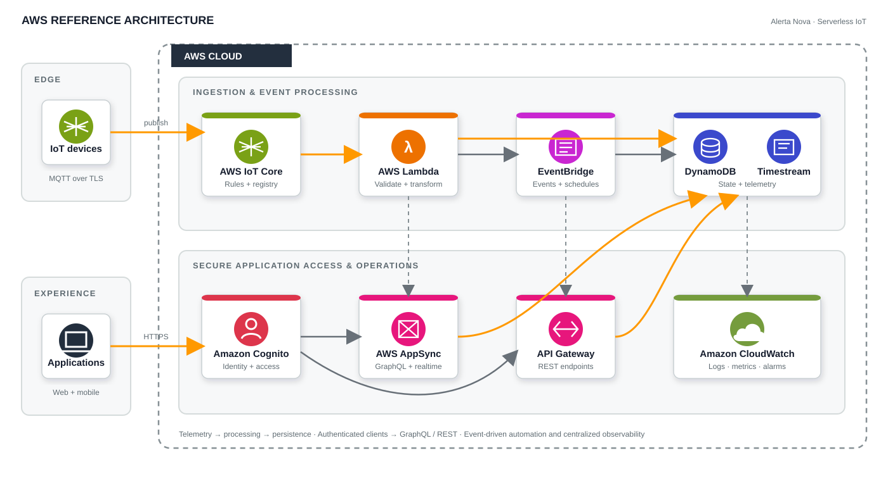

AppSync
GraphQL API for device status, messages, data, connectivity, timezone, routines, and web-app jobs.
Cloud architecture / IoT / serverless systems
Designed and implemented a cloud backend architecture for an IoT-connected product using AWS serverless services, then decomposed the platform into independently deployable infrastructure stacks with automated CI/CD.
The system accepts device telemetry and status messages through AWS IoT Core, routes events into serverless processing, stores operational and time-series data, and exposes application data through GraphQL and REST interfaces.

The backend evolved from a large SAM/CloudFormation definition into multiple stacks aligned to clear responsibilities. This reduced deployment coupling and made individual parts of the cloud system easier to build, test, and release.
GraphQL API for device status, messages, data, connectivity, timezone, routines, and web-app jobs.
Lambda-based authorization integrated with external identity validation, alongside IAM and API-key modes.
JavaScript resolver functions use direct DynamoDB data sources for low-overhead reads and writes, reserving Lambda for integration logic.
AWS IoT rules route selected telemetry and status topics into Lambda processing.
Functions perform ingestion, state updates, notification/routine logic, or time-series storage.
DynamoDB holds operational state while Timestream supports time-series telemetry.
AppSync and REST endpoints expose backend data and actions to application clients.
EventBridge schedules and events trigger periodic or lifecycle-related backend processes.
Portfolio representation is intentionally sanitized: account identifiers, credentials, secret names, internal endpoints, and deployment-specific values are omitted.
AWS · IoT · serverless · APIs · data architecture · infrastructure as code · CI/CD